定子磁链定向矢量控制
创建于2021-4-3
该项目完成于2018-10，原创
该项目完成于2018-10，原创
平时所说的“矢量控制”一般指的是转子磁链定向矢量控制，实际上除了转子磁链定向矢量控制，还有定子磁链定向矢量控制和气隙磁链定向矢量控制。下面将对定子磁链定向矢量控制进行简单介绍。
定子磁链定向矢量控制，是指在定子磁链定向的坐标系中实现矢量控制。定子磁链的获得相对于转子磁链要简单一些，与转子磁链的计算要使用电阻、电感等众多参数不同，定子磁链的计算只受到定子电阻的影响，因此精度可以更高。下图为异步电机定子磁链定向矢量控制的框图，可以看出，其结构与转子磁链定向矢量控制的结构类似，也是对转矩和磁链进行独立控制，以达到较好的控制性能。

转子磁链定向控制中，电流可以分解成转矩电流和励磁电流，从而实现了解耦控制。但在定子磁链定向控制中，按照定子磁链定向将电流进行分解后，并没有使转矩和磁链实现解耦，定子磁链会受到转矩电流的影响，因此在实际使用时，还需要进行解耦处理，才能保证磁链环的良好控制。上图中d轴电流给定中叠加了idfwd，叠加idfwd的目的就是为了使磁链和转矩进行解耦。
在常规方法的基础上，为方便使用，特开发了一种新的异步电机定子磁链定向矢量控制方法，还设计了永磁同步电机的定子磁链矢量定向控制方法，可以按照实际需求进行选择。